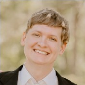
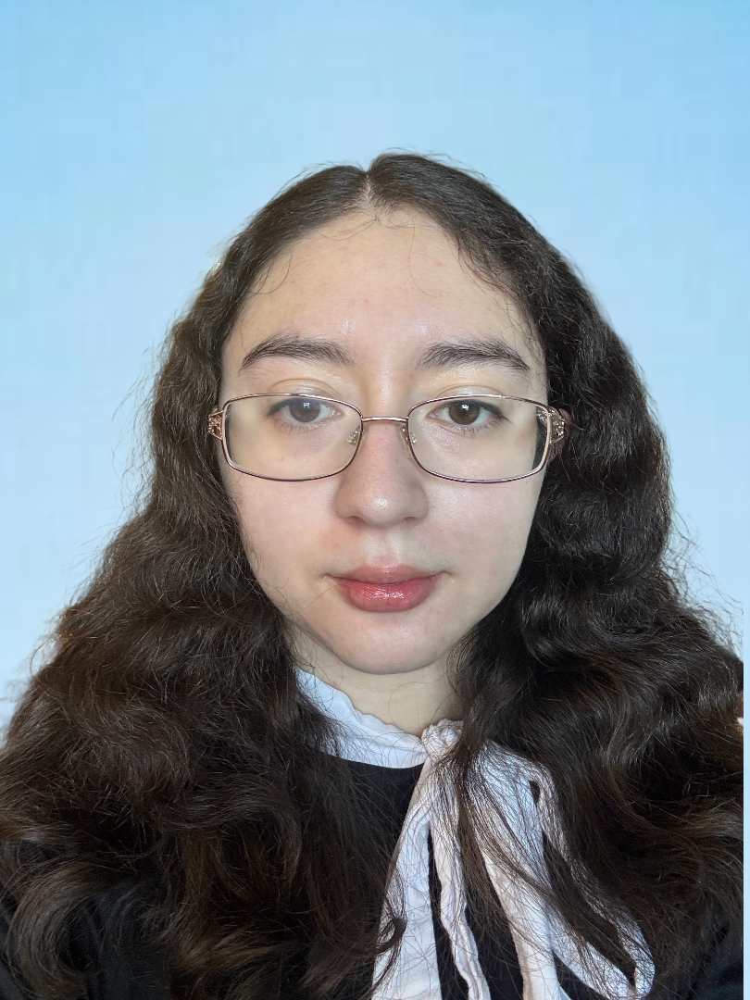

-3.png)
Meet the Team
Three NAU computer science students working together to modernize TLATeX.

Tyler Carver
Team Leader & Release Manager
Tyler is from Cave Creek, Arizona, and is studying computer science with a minor in physics. He develops medical research software at NAU’s Bioengineering Devices Lab.
His work includes processing brain scans, building models of blood vessels, and supporting blood-flow simulations. He also has experience with Python, Rust, GPU programming, and hardware.
For our project, Tyler coordinates tasks, leads meetings, communicates with the sponsor, and manages releases and branches.
tdc266@nau.edu
Aron Gebrezghr
Website Developer & Code Reviewer
Aron is a senior studying computer science at NAU. His coursework and projects have given him experience in software development.
While working for NAU Information Communication Technology, he helped install and maintain structured cabling and network pathways across campus. His Projects include a health and wellness website and Article Summarizer software to name a few..
Aron builds and maintains the team website. He also reviews code and helps keep changes and commit messages clear. Outside of school, he enjoys fishing, basketball, and history.
akg357@nau.edu
Evelyn Torres
Recorder & Document Editor
Evelyn is a senior studying computer science at NAU. She is from Buckeye, Arizona, and has lived in Flagstaff while attending college.
Her coursework includes operating systems, networks, data structures, and algorithms. She has worked on an operating system simulation and studied ways to manage threads, processes, and semaphores.
Evelyn records meeting minutes and helps organize, edit, and format the team’s documents. Her interests include spaceflight software and hardware, knitting, crochet, and reading.
eit27@nau.eduHow We Work Together
All three team members contribute to programming and presentations. We meet weekly to review completed work, discuss problems, and divide the next tasks. We also review our progress as a team each month.